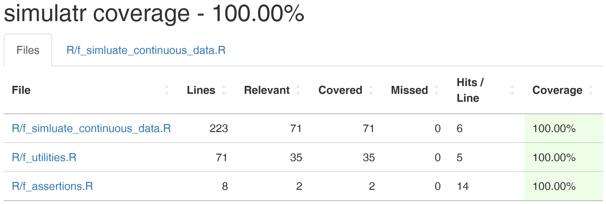
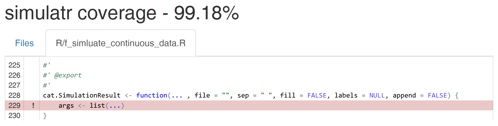

y=function(x){
s1=0
for(v1 in x){s1=s1+v1}
m1=s1/length(x)
i=ceiling(length(x)/2)
if(length(x) %% 2 == 0){i=c(i,i+1)}
s2=0
for(v2 in i){s2=s2+x[v2]}
m2=s2/length(i)
c(m1,m2)
}
y(c(1:7, 100))[1] 16.0 4.5BBS Course: Good Software Engineering Practice for R Packages
February 10, 2023
Photo CC0 by Pavel Danilyuk on pexels.com
This script breaks all common clean code rules:
y=function(x){
s1=0
for(v1 in x){s1=s1+v1}
m1=s1/length(x)
i=ceiling(length(x)/2)
if(length(x) %% 2 == 0){i=c(i,i+1)}
s2=0
for(v2 in i){s2=s2+x[v2]}
m2=s2/length(i)
c(m1,m2)
}
y(c(1:7, 100))[1] 16.0 4.5We now refactor it (CCR#9) by applying clean code rules…
CCR#1 Naming: Are the names of the variables, functions, and classes descriptive and meaningful?
getMeanAndMedian=function(x){
sum1=0
for(value in x){sum1=sum1+value}
meanValue=sum1/length(x)
centerIndices=ceiling(length(x)/2)
if(length(x) %% 2 == 0){
centerIndices=c(centerIndices,centerIndices+1)
}
sum2=0
for(centerIndex in centerIndices){sum2=sum2+x[centerIndex]}
medianValue=sum2/length(centerIndices)
c(meanValue,medianValue)
}CCR#1 Naming
CCR#2 Formatting: Are indentation, spacing, and bracketing consistent, i.e., is the code easy to read
getMeanAndMedian <- function(x) {
sum1 <- 0
for (value in x) {
sum1 <- sum1 + value
}
meanValue <- sum1 / length(x)
centerIndices <- ceiling(length(x) / 2)
if (length(x) %% 2 == 0) {
centerIndices <- c(
centerIndices, centerIndices + 1)
}
sum2 <- 0
for (centerIndex in centerIndices) {
sum2 <- sum2 + x[centerIndex]
}
medianValue <- sum2 / length(centerIndices)
c(meanValue, medianValue)
}CCR#2 Formatting
CCR#3 Simplicity: Did you keep the code as simple and straightforward as possible, i.e., did you avoid unnecessary complexity
Note:
CCR#3 Simplicity
CCR#4 Single Responsibility Principle (SRP): Has each function a single, well-defined purpose
getMean <- function(x) {
sum(x) / length(x)
}
isLengthAnEvenNumber <- function(x) {
length(x) %% 2 == 0
}
getMedian <- function(x) {
centerIndices <- ceiling(length(x) / 2)
if (isLengthAnEvenNumber(x)) {
centerIndices <- c(centerIndices, centerIndices + 1)
}
sum(x[centerIndices]) / length(centerIndices)
}CCR#4 Single Responsibility Principle (SRP)
CCR#5 Don’t Repeat Yourself (DRY): Did you avoid duplication of code, either by reusing existing code or creating functions
CCR#5: DRY
Suppose you have a code block that performs the same calculation multiple times:
Create a function to encapsulate this calculation and reuse it multiple times:
CCR#5 Don’t Repeat Yourself (DRY)
CCR#6 Comments: Did you use comments to explain the purpose of code blocks and to clarify complex logic
# returns the mean of x
getMean <- function(x) {
sum(x) / length(x)
}
# returns TRUE if the length of x is
# an even number; FALSE otherwise
isLengthAnEvenNumber <- function(x) {
length(x) %% 2 == 0
}
# returns the median of x
getMedian <- function(x) {
centerIndices <- ceiling(length(x) / 2)
if (isLengthAnEvenNumber(x)) {
centerIndices <- c(centerIndices,
centerIndices + 1)
}
getMean(x[centerIndices])
}# returns the mean of x
getMean <- function(x) {
tryCatch({
sum(x) / length(x)
}, error = function(e) {
stop("Failed to calculate the mean of 'x': ", e$message)
})
}
# returns TRUE if the length of x is an even number; FALSE otherwise
isLengthAnEvenNumber <- function(x) {
tryCatch({
length(x) %% 2 == 0
}, error = function(e) {
stop("Failed to check if 'x' is an even number: ", e$message)
})
}
# returns the median of x
getMedian <- function(x) {
tryCatch({
centerIndices <- ceiling(length(x) / 2)
if (isLengthAnEvenNumber(x)) {
centerIndices <- c(centerIndices, centerIndices + 1)
}
getMean(x[centerIndices])
}, error = function(e) {
stop("Failed to calculate the median of 'x': ", e$message)
})
}CCR#7 Error Handling
Recommended quality workflow for R packages:
CCR#8: TDD
Photo CC0 by ThisIsEngineering on pexels.com
Verification:
Are we building the product right?
Validation:
Are we building the right product?
CCR#8: TDD
Unit tests help to increase the reliability and maintainability of the code
Photo CC0 by cottonbro studio on pexels.com
R package testthat
Example: unit test passed
Example: unit test failed
Error: mean(1:4) (actual) not equal to 2 (expected).
| Function name | Does code… |
|---|---|
| expect_condition | fulfill a condition? |
| expect_equal | return the expected value? |
| expect_error | throw an error? |
| expect_false | return ‘FALSE’? |
| expect_gt | return a number greater than the expected value? |
| expect_gte | return a number greater or equal than the expected value? |
| expect_identical | return the expected value? |
| expect_invisible | return a invisible object? |
| expect_length | return a vector with the specified length? |
| expect_lt | return a number less than the expected value? |
| expect_lte | return a number less or equal than the expected value? |
| expect_mapequal | return a vector containing the expected values? |
| expect_message | show a message? |
| expect_named | return a vector with (given) names? |
| Function name | Does code… |
|---|---|
| expect_no_condition | run without condition? |
| expect_no_error | run without error? |
| expect_no_message | run without message? |
| expect_no_warning | run without warning? |
| expect_output | print output to the console? |
| expect_s3_class | return an object inheriting from the expected S3 class? |
| expect_s4_class | return an object inheriting from the expected S4 class? |
| expect_setequal | return a vector containing the expected values? |
| expect_silent | execute silently? |
| expect_true | return ‘TRUE’? |
| expect_type | return an object inheriting from the expected base type? |
| expect_vector | return a vector with the expected size and/or prototype? |
| expect_visible | return a visible object? |
| expect_warning | throw warning? |
covr: Track and report code coverage for your package

Let’s assume we have added a generic function to cat a simulation result:
We can go into the details by clicking on a file name:
CCR#2: Formatting
Photo CC0 by Pavel Danilyuk on pexels.com
CCR#2: Formatting
Two popular R packages support the tidyverse style guide:
The devtools function spell_check runs a spell check on text fields in the package description file, manual pages, and optionally vignettes.
How to link the styler1 package to a keyboard shortcut:
Photo CC0 by Pixabay on pexels.com
Take your local simulatr package project (see previous excercise) and refactor it, i.e., apply the linked clean code rules:
Apply CCR#8 to the simulatr package project: